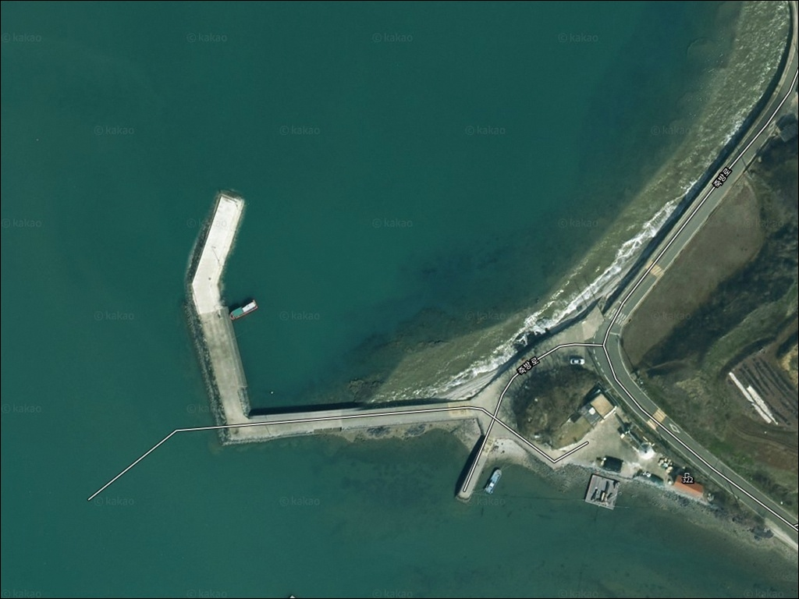
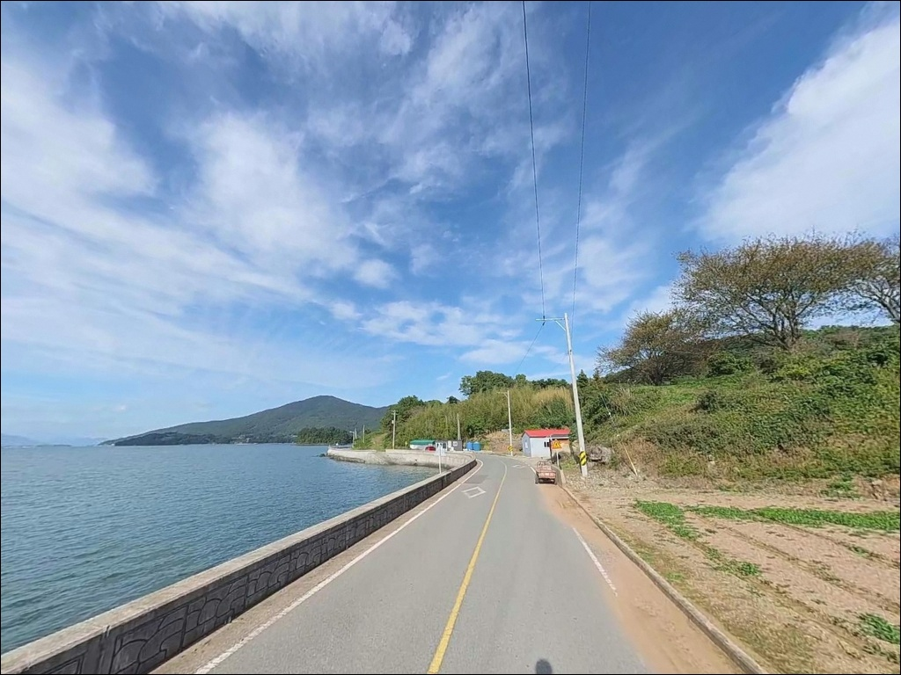
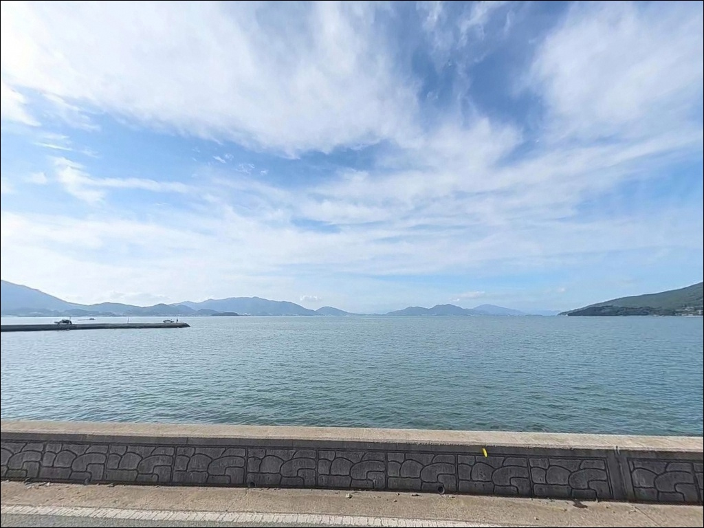
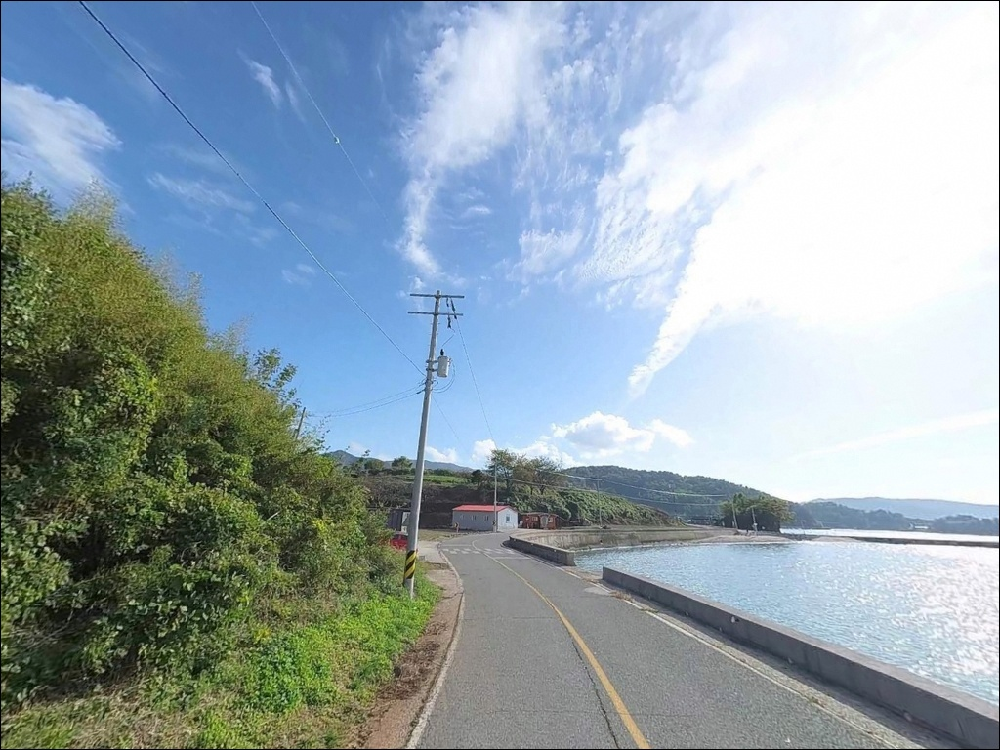
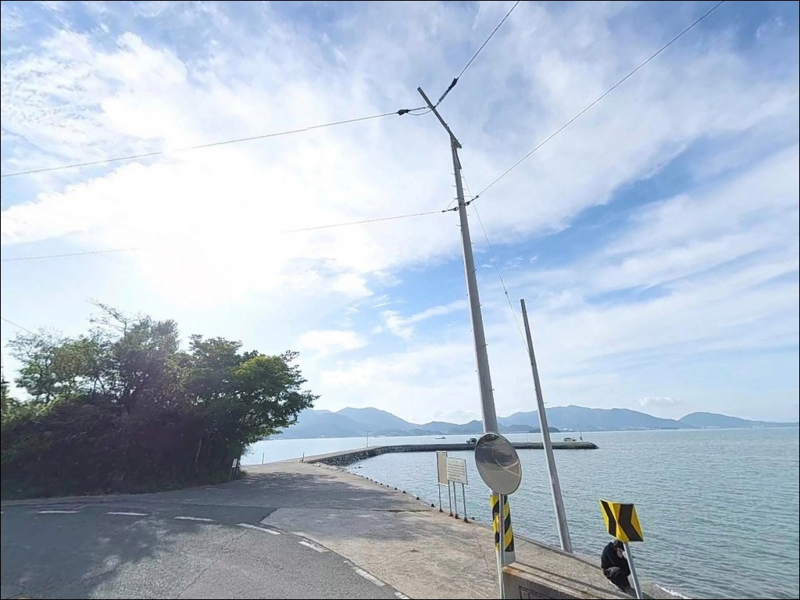
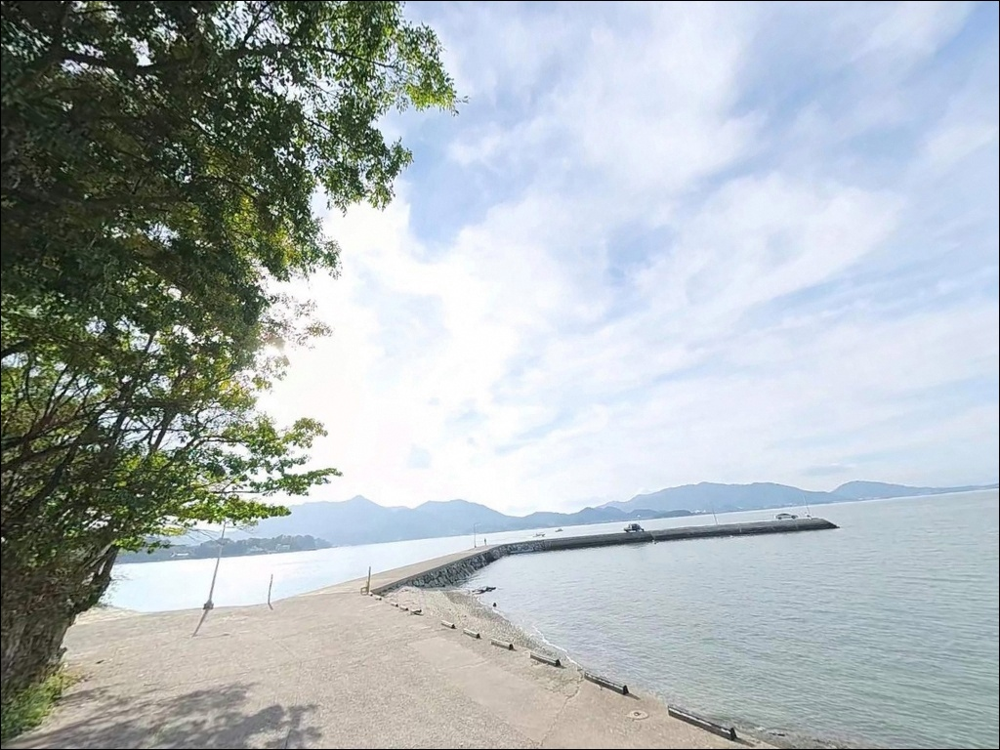
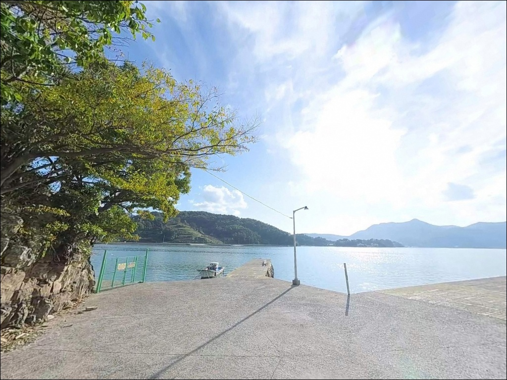
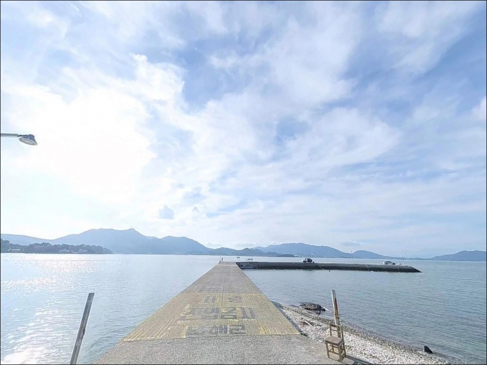
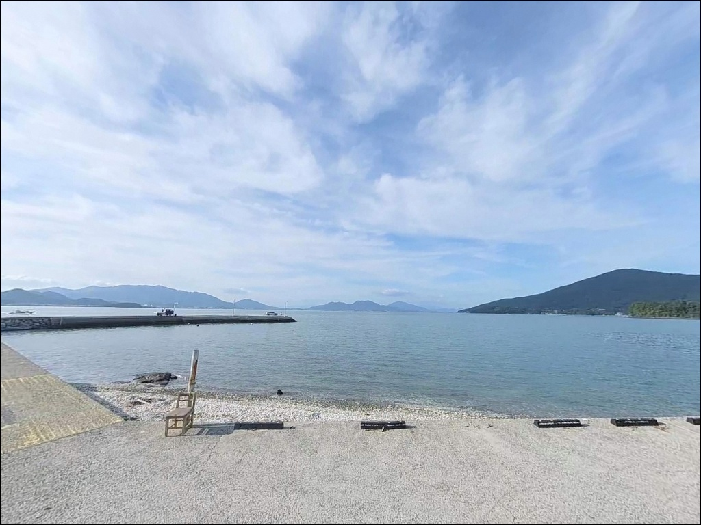

남해 수장포방파제, 초들물부터 중날물 사이 타임에 살아나는 외항 입질
이 페이지에는 광고(제휴 링크 포함)가 있으며, 광고 링크를 통해 구매하면 운영자가 판매 수익 또는 수수료를 받을 수 있습니다. 포인트 사진: 카카오맵 스카이뷰·로드뷰. 이 페이지의 지도·사진 이미지는 카카오맵의 실제 서비스 이미지와 다를 수 있습니다.


포인트 안내
수장포방파제
경남 남해군 삼동면 영지리 1873-2
이 글은 수장포방파제의
진입 동선, 차박 여건, 물때 판단 기준,
낚시 방식별 공략 조건에 집중합니다.
조황 단정이나 특정 어종 보장은
이 글의 범위에 포함되지 않습니다.
지족해협 조류가 간접적으로 닿는
남해 동부 연안 소형 방파제는
물때에 따라 낚시 여건이 크게 달라지는 구조입니다.
사리 전후 들물이 강하게 흐를 때는
가벼운 채비로는 컨트롤이 어려워지며,
초들물~중날물 타이밍을 잡아야
방파제 외항 구간이 비로소 살아납니다.
수장포방파제는 온라인 낚시 커뮤니티에서
직접 언급이 많지 않은 조용한 포인트입니다.
리아스식 해안선이 복잡하게 굴곡진
영지리 만입부에 자리한 소형 구조물로,
아직 덜 알려진 만큼 한적한 환경이
이 포인트의 가장 큰 특성입니다.

1. 진입 동선과 포인트 접근성
수장포방파제 접근은
삼동면 동부해안도로에서
영지리 방향 지방도로 진입하는 경로가 기본입니다.
영지리 내부 도로는 왕복 1차로 수준의 소로이며,
방파제 직전 구간은
포장·비포장이 혼재할 가능성이 있습니다.
차고가 낮은 세단 계열 차량은
진입 전 노면 상태를 먼저 확인하는 편이 안전합니다.
회차 공간은 방파제 기부 부근에서 가능합니다.
대형 캠핑카나 카고형 차량은
진입로 초입에서 진입 여부를
먼저 판단하고 들어가는 것이 맞습니다.
승용차나 SUV 수준이라면
진입 자체에 큰 어려움은 없습니다.
주차는 방파제 기부 전방 소형 공터를
활용하는 방식이 일반적입니다.
승용차 기준 3~5대 수준이며,
어선 하역 공간과 겸용 구조라
어민 차량 통행로를 반드시 비워두는 것이
기본 매너입니다.
주말에는 먼저 도착한 낚시인들이
공간을 선점하는 경우가 많습니다.

2. 차박 환경과 야간 체류 여건
수장포 일대는 민가 밀집도가 낮고
야간 차량 통행이 거의 없는 편입니다.
소규모 어촌 마을 특성상
프라이버시는 상대적으로 양호한 환경이지만,
가로등은 방파제 등대와 기부 인근
1~2개 수준으로 제한적입니다.
개인 조명 장비는 반드시 챙겨야 하는 포인트입니다.
내항 쪽으로 소수 민가가 자리하고 있어
야간 엔진 공회전이나 대형 음향은
삼가는 것이 기본입니다.
조용히 하룻밤 머무는 단기 대기형 차박으로는
나쁘지 않은 환경이지만,
주차 공간이 협소해
차박을 메인 목적으로 삼기엔 공간 확보가 먼저입니다.
지족해협 방향에서 흘러오는 조류 특성상
바람 영향을 받는 날에는
방파제 외항 쪽에서 체감 풍속이 강해지는 편입니다.
기상청 해상예보를 당일 아침에 한 번 더 확인하고
체류 자리를 결정하는 것이 안전합니다.


3. 주변 편의시설 및 인프라 현황
수장포방파제 반경 1~2km 이내에는
편의점이나 식당을 기대하기 어렵습니다.
소규모 어촌 마을 구조상
완전 자급 체제로 진입하는 것이
현실적인 준비 방식입니다.
식수, 얼음, 낚시 소품, 연료 모두
출발 전에 갖추는 것이 기본입니다.
차량으로 5분 거리인 지족리 방면으로 이동하면
편의점, 식당, 주유소 등
주요 상권을 이용할 수 있습니다.
반경 7~8km권에는
GS25 남해독일마을점(삼동면 동부대로 1121, 24시간 영업)이
자리하고 있어
부족한 소품이 있다면 이 동선을 활용하는 편이 효율적입니다.
주유는 영지리 내 S-Oil 주유소(영지리 1195-1)를
포인트 진입 전에 미리 이용하는 것이 좋습니다.
응급 상황 발생 시 남해군청 방면까지
거리가 상당하므로
출발 전 비상약품·수분 준비는 철저히
갖추는 것이 원칙입니다.

4. 수장포방파제 방문 전 준비사항
방문 전 가장 먼저 확인할 것은 물때입니다.
영지리 해역은 지족해협 조류 흐름의
간접 영향권에 놓여 있어
사리 전후에는 조류가 강해지며
가벼운 채비는 흐르기 쉬운 환경이 됩니다.
바다타임에서 수장포방파제 기준 물때를 확인하고
초들물~중날물 타이밍을 노려
출발 시각을 맞추는 것이 기본 전략입니다.
섬 지역 특성상 기상 변화가 빠릅니다.
기상청 해상예보를 당일 아침 다시 한번 확인하고
출조 여부를 최종 판단하는 것이
불필요한 헛걸음을 막는 조건입니다.
외항 테트라포드 주변은 밑걸림 가능성이 있으니
여분 채비는 넉넉히 준비합니다.
어선 출입 시간대인
새벽 4~6시, 오후 4~6시에는
진입로와 주차 공간을 비워주는 것이
기본 매너입니다.
야간 낚시 시에는
헤드랜턴과 구명조끼를 반드시 착용합니다.
낚시 후 쓰레기는 전량 회수해 가져가는 것이
이런 한적한 포인트를 오래 사용할 수 있는
조건입니다.

5. 지형 기반 낚시 여건 분석
수장포방파제는 남해도·창선도·신수도 사이
내만 해역의 만입부에 위치한 소형 방파제입니다.
외해 직격이 아닌 완충 지형 구조로,
방파제 외항 면은 남쪽 해역을 향해 노출되어 있고
내항은 소형 어선 정박 구역으로
수심이 외항보다 얕은 편입니다.
방파제 길이는 50~80m 수준의 소형 단일 구조로,
끝단 외항 기준 만조 시
5~7m 안팎의 수심을 형성합니다.
저질은 펄과 모래가 섞인 평탄 구조에
외항 테트라포드 경계 구간에서
수심이 급변하는 지점이 형성됩니다.
이 수심 변화 구간이 어류의 은신처 역할을 합니다.
조류는 창·낙조 흐름이 살아있는 편이며
들물이 흐르면서 외항 구간 활성이 올라오는 구조입니다.
사리 전후에는 강한 조류로 인해
채비 조작이 까다로워지므로
봉돌 무게를 조류에 맞게 올려주거나
정조 타이밍을 기다리는 판단이 필요합니다.
출조 전에 수장포방파제 조황을 먼저 검색해 보시기 바랍니다.


6. 포인트 지형에 어울리는 낚시 스타일
이 포인트에서 우선적으로 어울리는 낚시는
루어낚시입니다.
얕은 수심대와 펄·모래 바닥 구조는
미노우, 지그헤드, 웜 채비가
힘을 발휘하기 좋은 조건입니다.
방파제 외항 석축 주변과 테트라포드 경계를
집중 탐색하는 방식이 이 지형에 맞습니다.
농어·볼락 계열이 이 지형에서
기대해볼 수 있는 어종입니다.
찌낚시도 이 포인트에 잘 어울립니다.
수심이 얕은 만큼 저부력 채비 운용이 유리하며,
내만 구조 특성상 파도가 잔잔해
안정적인 낚시 환경을 유지합니다.
조류가 살아나는 들물 타이밍에
방파제 끝단에서 외항 방향으로
채비를 흘리는 방식이 기본입니다.
원투낚시는 내항 구간을 활용하는 방식이 맞습니다.
모래·펄 바닥으로 밑걸림이 적어
저층 공략이 가능한 구조입니다.
대형어보다는 소형~중형급 위주이며,
가을~겨울 시즌
야간 원투 붕장어 조과가
이 지형에서 기대해볼 수 있는 패턴입니다.

7. 대안 포인트와 플랜 B 동선
수장포방파제 조류가 지나치게 강하거나
주차 공간이 이미 선점된 경우,
첫 번째 대안은
지족항 방파제입니다.
차량으로 5분 거리에 있으며
규모가 크고 조류가 강해
감성돔 포인트로 알려진 곳입니다.
수장포보다 진입과 주차 여건이 안정적입니다.
동부해안도로를 타고 5~7km 이동하면
물건방파제가 있습니다.
빨간등대와 흰등대 두 개의 방파제로 구성되며
외항 수심이 5~11m로 깊고
어종 다양성이 높은 포인트입니다.
수장포방파제를 처음 찾는다면
물건방파제를 기점으로 잡고
수장포를 병행 탐색하는 동선이 효율적입니다.
대지포방파제도 같은 남해 동부권 대안입니다.
차량으로 약 5km 거리이며
몽돌밭과 방파제 구조로
루어낚시와 에깅 모두 대응 가능한 구조입니다.
수장포에서 여의치 않을 때
에깅 채비를 들고 이동하기 좋은
보조 포인트입니다.

조류 타이밍만 잡으면
수장포방파제는 충분히 쓸 만합니다
루어낚시나 찌낚시를 즐기는 낚시인이라면
수장포방파제의 만내 구조는
잘 맞는 지형 조건입니다.
외해 직격이 없어 파도가 잔잔하고
들물 타이밍에는 방파제 외항 구간이
살아나는 구조라,
물때를 맞춘다면 조용하고 한적한 환경에서
낚시에 집중하기 좋은 포인트입니다.
반면 편의시설 없이 완전 자급 체제로 진입해야 하고,
주차 공간이 협소해
주말 성수기에는 자리 확보가 어려울 수 있습니다.
물때 확인, 사전 자급 준비, 진입로 점검,
이 세 가지가 방문 성패를 가르는 기준입니다.
낚시 후 한적한 어촌 마을 분위기 속에서
조용히 하룻밤 머무는 것을 원하는 낚시인이라면,
주차 공간 사전 확인과 완전 자급 준비를
갖추고 간다면
낚시와 차박을 함께 즐길 수 있는
출조가 될 수 있는 곳입니다.